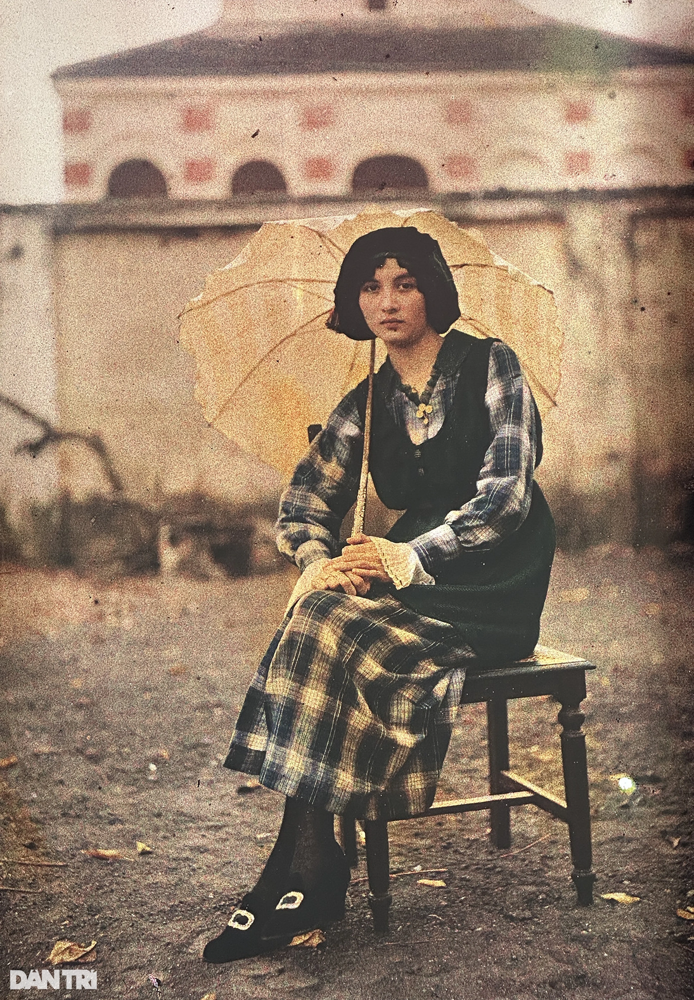
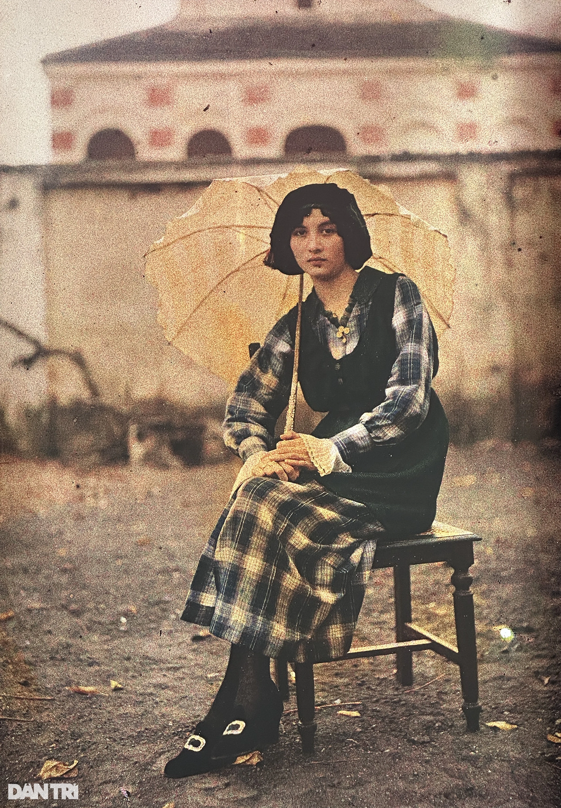

Hà Nội dưới thời Pháp thuộc
Thời kỳ Pháp thuộc là một thời kỳ quan trọng trong lịch sử Hà Nội, khi thành phố được quy hoạch lại theo kiểu phương Tây, với các công trình như Nhà hát Lớn và các con phố rộng lớn, hiện đại.
Sự xâm lược của Pháp
Vào năm 1858, quân Pháp tấn công Đà Nẵng và bắt đầu cuộc xâm lược Việt Nam. Đến năm 1873, Pháp chiếm Hà Nội và biến thành thủ đô của Bắc Kỳ (một phần của Liên bang Đông Dương). Hà Nội trở thành trung tâm hành chính quan trọng của Pháp ở Bắc Kỳ.
Xâm Lược Hà Nội Lần Thứ Hai (1882)
Vào năm 1882, Pháp quay lại và chiếm lại Hà Nội sau một cuộc tấn công quy mô lớn. Sau khi chiếm đóng, quân Pháp bắt đầu củng cố quyền lực tại thủ đô và bắt đầu các công trình xây dựng nhằm duy trì sự kiểm soát của thực dân tại đây.
Hà Nội Trở Thành Thủ Đô Của Đông Dương (1887)
Vào năm 1887, sau khi Việt Nam trở thành một phần của Liên bang Đông Dương, Hà Nội chính thức trở thành thủ đô của Đông Dương thuộc Pháp. Pháp đã xây dựng nhiều công trình, phát triển hạ tầng, và kiểm soát hoàn toàn các nguồn lực tại đây.
Xây dựng và cải cách dưới sự cai trị của Pháp
Người Pháp đã thực hiện nhiều cải cách hạ tầng như xây dựng các công trình công cộng, trường học, bệnh viện, và các khu phố mới theo kiến trúc Pháp. Hà Nội trở thành trung tâm văn hóa và giáo dục, nhưng chủ yếu phục vụ cho người Pháp và tầng lớp thượng lưu người Việt.
Chính sách cai trị về chính trị:
- Thiết lập bộ máy cai trị trực tiếp/gián tiếp.
- Chính sách “chia để trị”.
- Đàn áp sự phản kháng của người dân thuộc địa.
Chính sách cai trị về kinh tế:
- Vơ vét tài nguyên.
- Bóc lột nhân công.
- Độc chiếm thị trường tiêu thụ.
Chính sách cai trị về văn hóa:
- Thi hành chính sách “ngu dân”.
- Làm xói mòn các giá trị văn hóa truyền thống của cư dân Đông Nam Á.
Một Số Hình Ảnh Hà Nội Trước Cách Mạng
 

Phong trào đấu tranh và khởi nghĩa
Trong suốt thời kỳ này, người dân Việt Nam đã đấu tranh quyết liệt chống lại sự cai trị của Pháp. Các phong trào đấu tranh nổi bật như phong trào Duy Tân và các cuộc khởi nghĩa vũ trang đã nổ ra trên khắp cả nước.
Ảnh hưởng văn hóa và xã hội
Trong thời kỳ Pháp thuộc, văn hóa Trung Quốc và văn hóa Pháp đã ảnh hưởng lớn đến xã hội Việt Nam, đặc biệt là chữ Hán và phong tục. Tuy nhiên, người Việt vẫn duy trì nhiều phong tục và tín ngưỡng truyền thống của mình, như tục ăn trầu, thờ cúng tổ tiên, và các lễ hội truyền thống.
Cuộc sống và sự kết thúc thời kỳ Pháp thuộc
Cuộc sống của nhân dân bị đày đọa, khổ cực. Bị bóc lột, hành hạ bởi cả Pháp và Nhật. Đặc biệt là vào năm 1945 đã xảy ra nạn đói trầm trọng khiến hơn 2 triệu đồng bào đã chết.
Giành chính quyền tại Hà Nội:
- Ở Hà Nội không khí cách mạng sục sôi, Việt Minh hoạt động khắp thành phố.
- Sáng ngày 19/8, cả Hà Nội tràn ngập khí thế cách mạng. Đồng bào rầm rập kéo đến quảng trường Nhà hát lớn dự cuộc mít tinh do Mặt trận Việt Minh tổ chức. Bài hát Tiến quân ca lần đầu vang lên.
- Cuộc mít tinh nhanh chóng chuyển thành biểu tình, chia ra nhiều đoàn đi chiếm các công sở của chính quyền bù nhìn. Trước khí thế của cuộc khởi nghĩa, quân Nhật không dám chống lại. Cuộc khởi nghĩa hoàn toàn thắng lợi ở Hà Nội.
Cuối cùng, vào năm 1945, khi Nhật Bản đầu hàng trong Thế chiến II, Việt Nam đã giành lại độc lập và Hà Nội trở thành thủ đô của nước Việt Nam Dân chủ Cộng hòa sau khi Pháp thất bại trong việc tiếp tục cai trị.
Ngày 2/9, tại quảng trường Ba Đình lịch sử, Bác Hồ đọc bản Tuyên Ngôn Độc Lập, khai sinh nước Việt Nam Dân Chủ Cộng Hòa. Hà Nội trở thành thủ đô.
Cách mạng tháng 8 thành công tại Hà Nội và khoảnh khắc lịch sử


Ý kiến đóng góp của bạn về trang web